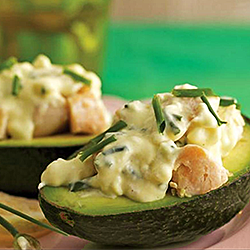

Dried Products

Black-eyed Peas
Scientific Name: Vigna Unguiculata
Tariff Reference: 0713.39.92.00
Origin: Northern coast of Peru
Characteristics:
Beans are legumes that constitute a rich fountain of protein and carbohydrates. This grain is cream colored with black spots, oval and elongated in shape with an approximate diameter of 5.5mm.
Caliber:
460/480 - 480/520 grains in 100 gr.
Defect Rate:
2.5% - 3% maximum. Graded and packed 100% manually and by machine.
Packaging: Polypropylene bags of 25kg. / 50 lbs. / 100 lbs. Net Weight.

White Beans
Scientific Name: Cajanus Cajan (L) Millsp
Tariff Reference: 0713.33.92.00
Origin: Inter-Andean Valleys of Peru
Characteristics:
The white bean is a white grain, medium oval shape. Stands out mostly for its high content of magnesium, rich in protein, carbohydrates, fiber and vitamins.
Caliber:
580/640 in 100 gr. Graded and packed 100% manually and by machine.
Packaging: Polypropylene bags of 25/50 kg. – 50/100 lbs. Net weight.

Pigeon Peas
Scientific Name: Cajanus Cajan
Tariff Reference: 0713.33.99.00
Origin: North coast of Peru
Characteristics:
Small rounded grain maroon or dark beige in color with darker maroon spots, rich in protein and carbohydrates and minerals.
Caliber:
520/640 in 100gr. Graded and packed 100% by machine and manually.
Packaging: Polypropylene bags of 25/50kg. - 50/100 lbs. Net weight.
Canary Beans
Scientific Name: Phaseolus Vulgaris
Tariff Reference: 0713.33.92.00
Origin: North coast of Peru
Characteristics:
A legume, hard grain edible fruit, dry and whole, yellow in color.
Commercialized in two varieties:
camanejo and yellow.
Packaging: Polypropylene bags of 25/50 kg. Net weight.

Mung Beans
Scientific Name: Vigna Radiata
Tariff Reference: 0713.39.10.00
Origin: North coast of Peru and High Rainforest.
Characteristics:
Small round grain, bright green in color. Rich in proteins, carbohydrates and minerals.
Caliber:
Standard defects of 3% maximum total. Graded and packed 100% by machine and manually.
Packaging: : Polypropylene bags of 25/50 kg. - 50/100lbs. Net weight.

Lima Beans
Scientific Name: Phaseolus lunatus
Tariff Reference: 0713.39.91.00
Origin: South region of Peru
Characteristics:
A flat extra-large kidney shaped grain creamy white in color.
Caliber:
45/50 – 65/70 grains of 100 gr.
Defect Rate:
2.5% to 3% total maximum defects. Graded and packed 100% by machine and manually.
Packaging: Polypropylene bags of 25/50 kg.-50/100lbs. Net weight.

Baby Lima Beans
Scientific Name: Phaseolus lunatus
Tariff Reference: 0713.33.91.00
Origin: South region of Peru
Characteristics:
A medium flat oval shaped grain, creamy white in color soft in texture and pleasant taste.
Caliber:
240/260 grains of 100 gr.
Defect Rate:
2.5% to 3% maximum total defects. Graded and packed 100% manually and by machine.
Packaging: Polypropylene bags of 25/50 kg. - 50/100 lbs. Net weight.
Fresh Products
Avocado
Scientific Name: Persea Americana Mill. Variety “Hass”
Tariff Reference: 0804.40.00.00
Availability: From April to August
Characteristics:
Skin that varies from green to purple turning blackish when ripe, pale green pulp with a creamy texture. Oval shaped with small to medium seed.
AVOCADO STUFFED WITH CHICKEN AND CHIVES
SERVES 6
Ingredients
1 chicken breast (with bones)
1 celery stalk chopped into squares
1 tbsp. chives, finely chopped
1 tbsp. Dijon mustard
1 tbsp. cream
1 plain yogurt
2.5 oz. (70 g.) cream cheese
Salt
3 large Chilean Hass avocados
Preparation
1. Bring 3 liters of water to boil on high heat. Once boiling, add chicken breast and cook for 35 minutes or until ready. Allow to cool.
2. Cut chicken breast into 1 cm. thick cubes and set aside. In a bowl, mix celery, chives, mustard, cream, yogurt, cream cheese. Add chicken and season with salt.
3. Peel, halve and pit avocados gently so the inside is not damaged.Stuff each avocado with the chicken paste.
HASS CAESAR SALAD
2 PORCIONES
Ingredients
Assorted lettuce
1 boneless chicken breast, cooked
½ cup olive oil
1 clove garlic, chopped
3 egg yolks
1 Chilean Hass avocado, sliced
Parmesan cheese
Salt and pepper to taste
Bread croutons
Preparation
1. Tear off lettuce leaves, keep in cold water until use. Cut chicken breast into strips and set aside.
2. In a blender, add egg yolks and garlic. Add oil until the mayonnaise is formed.
3. Mix lettuce with mayonnaise, add strips of chicken and pieces of avocado.
4. Add plenty of grated parmesan cheese in slices. Season with salt and pepper. Add bread croutons and serve.
Mango
Scientific Name: Manguifera indica
Tariff Reference: 0804.50.20.00
Variety: Kent
Characteristics:
The Kent variety is unique in its aroma, Deep flavor, soft texture and absence of fiber. The zones where our fruit is cultivated possess climatic conditions that are unique. Piura, for example, with huge differences of temperature between summer and winter, make this land a privileged location. The best mangoes in both size and color come from this zone.
Caliber:
6 – 7 – 8 – 9 – 10 – 12-14.
Calendar:
Nov-Dec-Jan-Feb-Mar
Packaging: Carton box of 4kg.